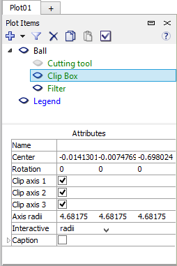
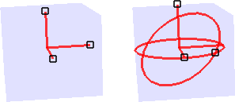

绘图项裁剪框
裁剪框由三个共享同一中心的平面范围构成。每个范围的大小和可见性均可单独控制。当三个范围全部启用时，它们便构成一个框，因此得名“裁剪框”。当裁剪框激活时，绘图项被裁剪到其位于该框内部的部分。

显示裁剪框（使裁剪框在绘图中可见）：在“绘图项列表”中选中它即可。当在“绘图项列表”中选中其他对象时，裁剪框会从视图中移除。
激活切割工具（在绘图中开启其裁剪作用），或通过切换其  按钮来取消激活。
按钮来取消激活。
注意
显示与激活彼此独立。
裁剪框可以复制/粘贴（copied/pasted）到另一个绘图项上。此操作可以跨绘图执行。
要处理某个绘图项的裁剪框，请在控制集的上部选中它。控制集下部的属性部分（见相邻图片）将显示其属性。这些属性可在控制集的属性部分调整，也可通过在绘图内操作切割工具进行交互式调整。
若要在不显示对绘图项影响的情况下操作裁剪框，请将其取消激活（切换 ），但保持裁剪框在控制集上部被选中。
裁剪框属性
名称：设置裁剪框的名称。
中心：设置裁剪框中心的位置。
旋转：设置裁剪框的旋转。
裁剪轴 1：打开（勾选）或关闭第一个裁剪框轴的显示。
裁剪轴 2：打开（勾选）或关闭第二个裁剪框轴的显示。
裁剪轴 3：打开（勾选）或关闭第三个裁剪框轴的显示。
轴半径：分别指定第一个、第二个和第三个裁剪框轴的长度。
交互：指定视图中当前的交互模式。选项为“偏移”“半径”和“方位”。这些选项的用法将在下一节（下文）中说明。
标注：在视图图例中包含（勾选）该项的标注。子属性可对标注中所含的元素及其外观提供额外控制。
在绘图中操作裁剪框
使用控制集属性部分中的“交互”设置，按需设定交互模式。用于操作裁剪框的交互控件将显示在视图上。

图 1：选择“偏移”或“半径”时，控件如左图所示；选择“方位”时，控件如右图所示。
按如下方式操作控件。
偏移：拖动控制柄点（  ）可沿控制点所在轴向前后滑动裁剪框。
）可沿控制点所在轴向前后滑动裁剪框。
半径：拖动某根轴的控制柄点，可沿该轴扩展/缩小裁剪框的范围。
方位：拖动控制柄点可绕包含该控制柄点的轴向路径旋转裁剪框。
当鼠标光标移到足够靠近某个控制柄点的位置、能够“抓取”它来执行上述某项操作时，光标会从箭头（ ）变为手形（  ）。
）。
CS：裁剪框的图示需要更新，以包含同步字段
| 这些内容对您有帮助吗？… 版权与免责声明 | FLAC3D © 2019, Itasca | 原文更新于 2020 年 10 月 8 日 |